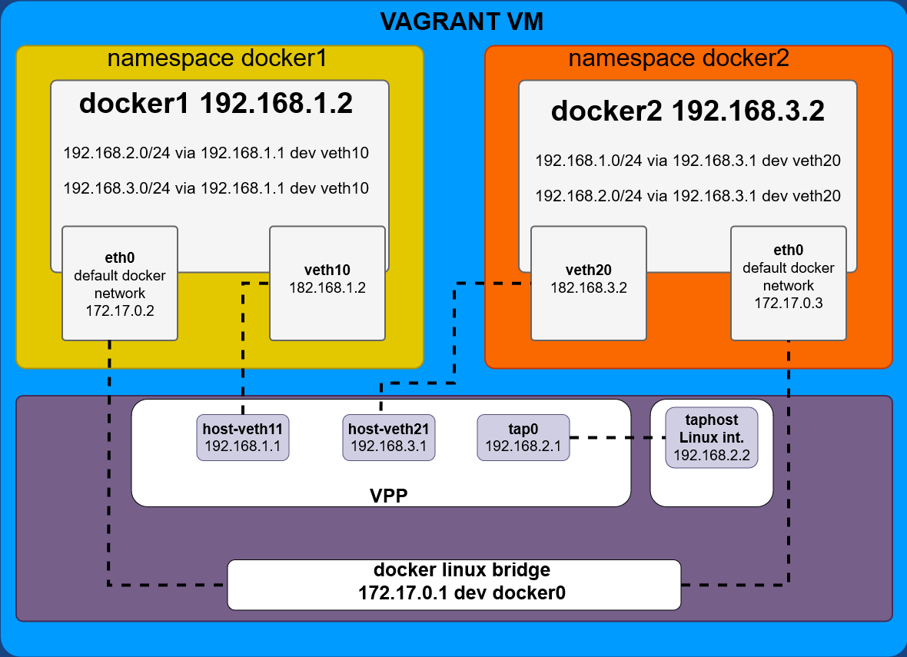
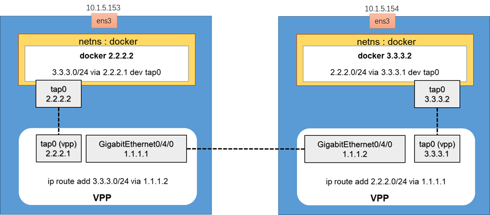
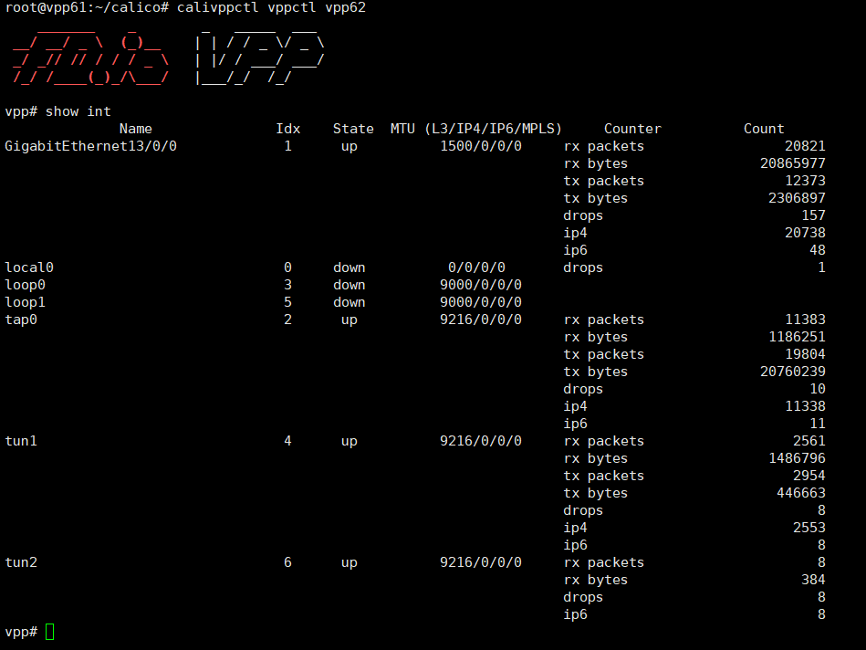
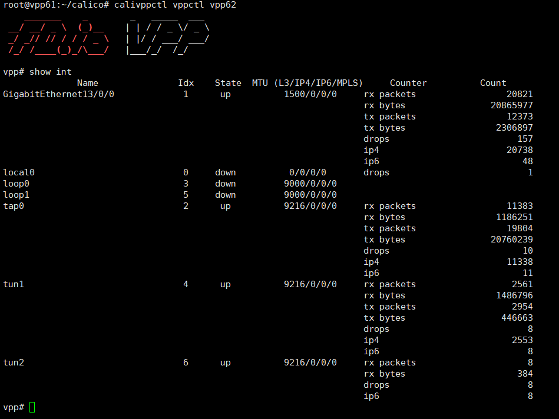

VPP
blogs of amwork2010

日期: 2023-02-04
日期: 2023-02-04
date: 2023-02-04
https://wiki.fd.io/view/VPP/Progressive_VPP_Tutorial
https://s3-docs.fd.io/vpp/22.10/
vpp u2204 vmware : 网卡均为vmxnet3
 https://packagecloud.io/fdio
https://packagecloud.io/fdio

apt install driverctl
driverctl list-devices | grep vmxnet3
0000:0b:00.0 vmxnet3
0000:13:00.0 vmxnet3
0000:1b:00.0 vmxnet3
driverctl set-override 0000:13:00.0 vfio-pci # 重启后仍然绑定
driverctl unset-override 0000:13:00.0 # 解除绑定
dpdk-devbind.py -b vfio-pci 0000:13:00.0 # 重启后解除绑定
apt install dpdk dpdk-dev -y
## 22.10
curl -s https://packagecloud.io/install/repositories/fdio/release/script.deb.sh | sudo bash -vx
cat /etc/apt/sources.list.d/fdio_release.list
apt-get update
apt-get install vpp vpp-plugin-core vpp-plugin-dpdk
# apt-get install vpp-api-python python3-vpp-api vpp-dbg vpp-dev
# Uninstall the Packages
# apt-get remove --purge vpp*
# systemctl enable vpp
systemctl status vpp
vi /lib/systemd/system/vpp.service
ExecStartPre=-/sbin/modprobe vfio-pci
vi /etc/vpp/startup.conf
dpdk {
uio-driver vfio-pci
dev 0000:13:00.0
dev 0000:1b:00.0
}
systemctl daemon-reload && systemctl restart vpp && systemctl status vpp
vppctl show ver
vppctl
提示符：
vpp#
set interface state GigabitEthernet13/0/0 up
set interface state GigabitEthernet1b/0/0 up
set interface ip address GigabitEthernet13/0/0 1.1.1.1/24
set interface ip address GigabitEthernet1b/0/0 2.1.1.1/24
show interface
ubuntu0:

ubuntu1:

ubuntu0:
iperf -s -i 1
ubuntu1:
iperf -t 10 -i 1 -c 1.1.1.2
 dpdk有2-3G，网卡是10G
dpdk有2-3G，网卡是10G
不用dpdk，重启后：
ip l s ens224 up
ip l s ens256 up
ip a a 1.1.1.1/24 dev ens224
ip a a 2.1.1.1/24 dev ens256
路由方式1G，这个对的。

clean:
ip a flush ens224
ip a flush ens256
ip l s ens224 down
ip l s ens256 down
date: 2023-02-04
# vm.xml
<interface type='bridge'>
<source bridge='br0'/>
<model type='vmxnet3'/>
</interface>
<interface type='bridge'>
<source bridge='br0'/>
<model type='vmxnet3'/>
</interface>
## HOST : 10.1.1.8
../startVMs/startvm.sh vpp_5.151 jammy-server-cloudimg-amd64.20221210.pw1-10.1.5.3.img 4 8
######### 0.prepare
apt update
apt -y full-upgrade
ln -sf ../usr/share/zoneinfo/Asia/Shanghai /etc/localtime
[ -f /var/run/reboot-required ] && reboot -f
######### 1. 启用rc.local
cat << EOF >> /etc/rc.local
#!/bin/bash
echo 1 > /sys/module/vfio/parameters/enable_unsafe_noiommu_mode
EOF
chmod +x /etc/rc.local
cat << EOF >> /lib/systemd/system/rc-local.service
[Install]
WantedBy=multi-user.target
EOF
cat /lib/systemd/system/rc-local.service
# 启用服务
systemctl enable rc-local
systemctl start rc-local
systemctl status rc-local
# 查看是否成功
cat /sys/module/vfio/parameters/enable_unsafe_noiommu_mode
echo "vfio-pci" > /etc/modules-load.d/95-vpp.conf
######### 2. hugepages
cat <<EOF >> /etc/sysctl.conf
vm.nr_hugepages = 2048
EOF
sysctl -p
######### 3. vpp && dpdk
lshw -businfo -c network
apt install dpdk dpdk-dev -y
## https://packagecloud.io/fdio
#curl -s https://packagecloud.io/install/repositories/fdio/release/script.deb.sh | sudo bash
curl -s https://packagecloud.io/install/repositories/fdio/2210/script.deb.sh | sudo bash
cat /etc/apt/sources.list.d/fdio_2210.list
apt update
apt install vpp vpp-plugin-core vpp-plugin-dpdk -y
# systemctl enable vpp
# systemctl disable vpp
systemctl status vpp
mkdir -p /var/log/vpp
cat /etc/sysctl.d/80-vpp.conf
vi /lib/systemd/system/vpp.service
ExecStartPre=-/sbin/modprobe vfio-pci
ExecStartPre=-/bin/bash -c 'echo 1 > /sys/module/vfio/parameters/enable_unsafe_noiommu_mode && sleep 2'
vi /etc/vpp/startup.conf
dpdk {
uio-driver vfio-pci
dev 0000:00:04.0
}
systemctl daemon-reload && systemctl restart vpp
## CPU0 100%
vppctl show ver
vppctl
show interface
apt install docker.io -y
docker pull ubuntu:22.04
vi Dockerfile
FROM ubuntu:22.04
RUN sed -i 's/archive.ubuntu.com/mirrors.ustc.edu.cn/g' /etc/apt/sources.list && \
sed -i 's/security.ubuntu.com/mirrors.ustc.edu.cn/g' /etc/apt/sources.list
RUN apt-get update -y && apt-get install -y tzdata && \
ln -sf /usr/share/zoneinfo/Asia/Shanghai /etc/localtime && \
dpkg-reconfigure -f noninteractive tzdata
RUN apt-get install dpdk kmod curl vim -y
RUN curl -s https://packagecloud.io/install/repositories/fdio/release/script.deb.sh | bash && \
apt-get update -y && apt-get install vpp vpp-plugin-core vpp-plugin-dpdk -y
RUN mkdir -p /var/log/vpp
### vpp v22.10-release
### dpdk 21.11
docker build -t amwork2010/vppdpdk:22.10 .
docker run --privileged \
-v /sys/bus/pci/devices:/sys/bus/pci/devices \
-v /sys/kernel/mm/hugepages:/sys/kernel/mm/hugepages \
-v /sys/devices/system/node:/sys/devices/system/node \
-v /lib/modules:/lib/modules \
-v /dev:/dev \
-it amwork2010/vppdpdk:22.10 bash
docker run --privileged \
-v /sys/bus/pci/devices:/sys/bus/pci/devices \
-v /sys/kernel/mm/hugepages:/sys/kernel/mm/hugepages \
-v /sys/devices/system/node:/sys/devices/system/node \
-v /lib/modules:/lib/modules \
-v /dev:/dev \
-d amwork2010/vppdpdk:22.10 sleep infinity
vi /etc/vpp/startup.conf
dpdk {
uio-driver vfio-pci
dev 0000:00:04.0
}
vpp -c /etc/vpp/startup.conf &
####
docker run --privileged \
-v /lib/modules:/lib/modules \
-d amwork2010/vppdpdk:22.10 sleep infinity
# 也可以banding , kmod ： the kmod package would provide modinfo, modprobe and other related tools.
# root@714c8d6fc89e:/# modprobe vfio-pci
# modprobe: FATAL: Module vfio-pci not found in directory /lib/modules/5.15.0-58-generic
# so: -v /lib/modules:/lib/modules
# vpp 启动 带不到dpdk网卡，docker stop ， 再start，再 vpp -c /etc/vpp/startup.conf & 才可以banding
date: 2023-02-04
https://wiki.fd.io/view/VPP/Progressive_VPP_Tutorial
https://s3-docs.fd.io/vpp/22.10/
Rocky Linux 8.7
# rocky87
vi /etc/default/grub
GRUB_CMDLINE_LINUX="........... default_hugepagesz=1G hugepagesz=1G hugepages=4 iommu=pt intel_iommu=on"
grub2-mkconfig -o /boot/grub2/grub.cfg
reboot
[root@rocky87 ~]# lshw -c network -businfo
Bus info Device Class Description
========================================================
pci@0000:04:00.0 ens161 network VMXNET3 Ethernet Controller
pci@0000:0b:00.0 ens192 network VMXNET3 Ethernet Controller
pci@0000:13:00.0 ens224 network VMXNET3 Ethernet Controller
pci@0000:1b:00.0 ens256 network VMXNET3 Ethernet Controller
yum install -y driverctl
driverctl list-devices | grep -i vmxnet3
[root@rocky87 ~]# driverctl list-devices | grep -i vmxnet3
0000:04:00.0 vmxnet3
0000:0b:00.0 vmxnet3
0000:13:00.0 vmxnet3
0000:1b:00.0 vmxnet3
yum install -y epel-release
sed -e 's|^metalink=|#metalink=|g' \
-e 's|^#baseurl=https\?://download.fedoraproject.org/pub/epel/|baseurl=https://mirrors.ustc.edu.cn/epel/|g' \
-e 's|^#baseurl=https\?://download.example/pub/epel/|baseurl=https://mirrors.ustc.edu.cn/epel/|g' \
-i.bak \
/etc/yum.repos.d/epel.repo
yum install -y mbedtls
# https://packagecloud.io/fdio
# curl -s https://packagecloud.io/install/repositories/fdio/release/script.rpm.sh | sudo bash
curl -s https://packagecloud.io/install/repositories/fdio/2106/script.rpm.sh | sudo bash
yum install -y vpp vpp-plugins vpp-devel vpp-debuginfo vpp-api-python3 vpp-api-lua vpp-ext-deps
#yum install -y vpp vpp-plugins vpp-devel vpp-debuginfo vpp-api-python3 vpp-api-lua vpp-ext-deps ### auto install vpp-lib vpp-selinux-policy
[root@rocky87 yum.repos.d]# yum install vpp vpp-plugins vpp-devel vpp-debuginfo vpp-api-python3 vpp-api-lua vpp-ext-deps
Last metadata expiration check: 0:02:59 ago on Sun 01 Jan 2023 10:30:25 AM CST.
Error:
Problem: cannot install the best candidate for the job
- nothing provides libmbedcrypto.so.3()(64bit) needed by vpp-plugins-21.06-release.x86_64
- nothing provides libmbedtls.so.12()(64bit) needed by vpp-plugins-21.06-release.x86_64
- nothing provides libmbedx509.so.0()(64bit) needed by vpp-plugins-21.06-release.x86_64
(try to add '--skip-broken' to skip uninstallable packages or '--nobest' to use not only best candidate packages)
[root@rocky87 yum.repos.d]# rpm -ql mbedtls
...
/usr/lib64/libmbedcrypto.so.2.28.1
/usr/lib64/libmbedcrypto.so.7
/usr/lib64/libmbedtls.so.14
/usr/lib64/libmbedtls.so.2.28.1
/usr/lib64/libmbedx509.so.1
/usr/lib64/libmbedx509.so.2.28.1
...
cd /usr/lib64/
ln -s libmbedcrypto.so.7 libmbedcrypto.so.3
ln -s libmbedtls.so.14 libmbedtls.so.12
ln -s libmbedx509.so.1 libmbedx509.so.0
yum install -y vpp vpp-devel vpp-debuginfo vpp-api-python3 vpp-api-lua vpp-ext-deps
wget --content-disposition https://packagecloud.io/fdio/2106/packages/el/8/vpp-plugins-21.06.0-3~gbb25fbf28~b50.x86_64.rpm/download.rpm?distro_version_id=205
rpm -ivh vpp-plugins-21.06.0-3~gbb25fbf28~b50.x86_64.rpm --nodeps
修改配置同ubuntu
ip l s ens224 down
ip l s ens256 down
systemctl restart vpp
systemctl status vpp
自己build 失败！make install-dep 依赖包安装不全，名字也对不上，比如：python36-ply实际能安装python3-ply，python-virtualenv 实际 python3-virtualenv
devtoolset-9 devtoolset-9-libasan-devel 根本没有 gcc9的，安装的是gcc version 8.5.0 20210514 (Red Hat 8.5.0-15) (GCC)
# build OK, 见下篇文档
date: 2023-02-04
https://wiki.fd.io/view/VPP/Progressive_VPP_Tutorial
https://s3-docs.fd.io/vpp/22.10/
Rocky Linux 8.7
vi /etc/default/grub
GRUB_CMDLINE_LINUX="..... default_hugepagesz=1G hugepagesz=1G hugepages=4 iommu=pt intel_iommu=on"
grub2-mkconfig -o /boot/grub2/grub.cfg
reboot
cp /etc/os-release /etc/os-release.bak
vi /etc/os-release
ID="rocky" --> centos
VERSION_ID="8.7" --> VERSION_ID="8"
yum -y groupinstall "Development Tools"
yum -y install git
export https_proxy=http://10.1.1.12:8118
export http_proxy=http://10.1.1.12:8118
git clone https://github.com/FDio/vpp.git
cd vpp
git branch -a
git checkout -b 2210 origin/stable/2210
git branch -a
make install-dep
make install-ext-dep
make pkg-rpm
#make build
#make build-release
cd /root
mkdir -p rpm
cd rpm/
mv /root/vpp/build/external/vpp-ext-deps-22.10-9.x86_64.rpm ./
mv /root/vpp/build-root/vpp-*rpm ./
[root@rocky87 rpm]# ll
total 201588
-rw-r--r-- 1 root root 255504 Jan 27 08:39 vpp-22.10.0-3~gb89dcf824.x86_64.rpm
-rw-r--r-- 1 root root 31608 Jan 27 08:39 vpp-api-lua-22.10.0-3~gb89dcf824.x86_64.rpm
-rw-r--r-- 1 root root 71388 Jan 27 08:39 vpp-api-python3-22.10.0-3~gb89dcf824.x86_64.rpm
-rw-r--r-- 1 root root 1212796 Jan 27 08:39 vpp-debuginfo-22.10.0-3~gb89dcf824.x86_64.rpm
-rw-r--r-- 1 root root 5591264 Jan 27 08:39 vpp-debugsource-22.10.0-3~gb89dcf824.x86_64.rpm
-rw-r--r-- 1 root root 1886688 Jan 27 08:39 vpp-devel-22.10.0-3~gb89dcf824.x86_64.rpm
-rw-r--r-- 1 root root 84047680 Jan 27 08:03 vpp-ext-deps-22.10-9.x86_64.rpm
-rw-r--r-- 1 root root 6461424 Jan 27 08:39 vpp-lib-22.10.0-3~gb89dcf824.x86_64.rpm
-rw-r--r-- 1 root root 50819564 Jan 27 08:39 vpp-lib-debuginfo-22.10.0-3~gb89dcf824.x86_64.rpm
-rw-r--r-- 1 root root 11108604 Jan 27 08:39 vpp-plugins-22.10.0-3~gb89dcf824.x86_64.rpm
-rw-r--r-- 1 root root 44888316 Jan 27 08:40 vpp-plugins-debuginfo-22.10.0-3~gb89dcf824.x86_64.rpm
-rw-r--r-- 1 root root 18520 Jan 27 08:39 vpp-selinux-policy-22.10.0-3~gb89dcf824.x86_64.rpm
yum install *.rpm
# 报错，conflicts with files，有冲突
yum install *.rpm --downloadonly
# 先把需要的依赖包安装
cd /var/cache/dnf/.....
yum install ....
# 用rpm强制安装
cd /root/rpm
rpm -ivh --force *.rpm
systemctl status vpp
vi /lib/systemd/system/vpp.service
ExecStartPre=-/sbin/modprobe vfio-pci
vi /etc/vpp/startup.conf
dpdk {
uio-driver vfio-pci
dev 0000:13:00.0
dev 0000:1b:00.0
}
plugins {
path /usr/lib/vpp_plugins
}
systemctl daemon-reload && systemctl restart vpp && systemctl status vpp
/opt/vpp/external/x86_64/bin/dpdk-devbind.py -s
vppctl show ver
vppctl show int
vppctl show plugins
export PATH=$PATH:/opt/vpp/external/x86_64/bin/
vmware:
### vmware
modprobe vfio-pci
ip l s ens224 down
ip l s ens256 down
dpdk-devbind.py -b vfio-pci 0000:13:00.0 0000:1b:00.0
vi /lib/systemd/system/vpp.service
ExecStartPre=-/usr/sbin/ip l s ens224 down
ExecStartPre=-/usr/sbin/ip l s ens256 down
ExecStartPre=-/sbin/modprobe vfio-pci
## 查看网卡信息
/opt/vpp/external/x86_64/bin/dpdk-devbind.py -s
vi /etc/vpp/startup.conf
dpdk {
uio-driver vfio-pci
dev 0000:13:00.0
dev 0000:1b:00.0
}
plugins {
path /usr/lib/vpp_plugins
}
systemctl daemon-reload && systemctl restart vpp && systemctl status vpp
/opt/vpp/external/x86_64/bin/dpdk-devbind.py -s
qemu:
### qemu
### 以下可以不用做 BEGIN
echo "vfio-pci" > /etc/modules-load.d/95-vpp.conf
cat << EOF >> /etc/rc.local
echo 1 > /sys/module/vfio/parameters/enable_unsafe_noiommu_mode
EOF
chmod +x /etc/rc.local
### 可以不用做 END
vi /lib/systemd/system/vpp.service
After=syslog.target network.target auditd.service NetworkManager-wait-online.service
ExecStartPre=-/usr/sbin/ip l s eth1 down
ExecStartPre=-/usr/sbin/ip l s eth2 down
ExecStartPre=-/sbin/modprobe vfio-pci
ExecStartPre=-/bin/bash -c 'echo 1 > /sys/module/vfio/parameters/enable_unsafe_noiommu_mode && sleep 2'
## 查看网卡信息
export PATH=$PATH:/opt/vpp/external/x86_64/bin/
/opt/vpp/external/x86_64/bin/dpdk-devbind.py -s
vi /etc/vpp/startup.conf
dpdk {
uio-driver vfio-pci
dev 0000:00:04.0
dev 0000:00:05.0
}
plugins {
path /usr/lib/vpp_plugins
}
systemctl daemon-reload && systemctl restart vpp && systemctl status vpp
/opt/vpp/external/x86_64/bin/dpdk-devbind.py -s
vppctl show ver
vppctl show int
vppctl show plugins
top -H
# CPU0 100%
date: 2023-02-04
ip link add name ns1host type veth peer name ns1vpp
ip netns add vns1
ip link set ns1host netns vns1
ip netns exec vns1 ifconfig ns1host 1.1.1.2/24 up
ip netns exec vns1 route add -net 2.2.2.0/24 gw 1.1.1.1
ip link add name ns2host type veth peer name ns2vpp
ip netns add vns2
ip link set ns2host netns vns2
ip netns exec vns2 ifconfig ns2host 2.2.2.2/24 up
ip netns exec vns2 route add -net 1.1.1.0/24 gw 2.2.2.1
vppctl
create host-interface name ns1vpp
create host-interface name ns2vpp

show interface
set int state host-ns1vpp up
set int state host-ns2vpp up
set int ip address host-ns1vpp 1.1.1.1/24
set int ip address host-ns2vpp 2.2.2.1/24
show ip fib
show int addr
trace add af-packet-input 10
show trace
clear trace
ip netns exec vns1 ip a
ip netns exec vns1 ping -c 1 2.2.2.2
show ip neighbors
show ip fib
show hardware-interfaces
host-ns1vpp --> 02:fe:f8:9f:d7:c3
host-ns2vpp --> 02:fe:5b:e3:0b:b4
ip netns exec vns1 ip a
ns1host 32:52:66:6e:76:44
ip netns exec vns2 ip a
ns2host f6:b5:34:dc:25:c5
ICMP: 1.1.1.2 -> 2.2.2.2
32:52:66:6e:76:44 -> 02:fe:f8:9f:d7:c3
02:fe:5b:e3:0b:b4 -> f6:b5:34:dc:25:c5
https://wiki.fd.io/view/VPP/Configure_VPP_As_A_Router_Between_Namespaces
# 1.Setup
#!/bin/bash
if [ $USER != "root" ] ; then
echo "Restarting script with sudo..."
sudo $0 ${*}
exit
fi
# delete previous incarnations if they exist
ip link del dev veth_vpp1
ip link del dev veth_vpp2
ip netns del vpp1
ip netns del vpp2
#create namespaces
ip netns add vpp1
ip netns add vpp2
# create and configure 1st veth pair
ip link add name veth_vpp1 type veth peer name vpp1
ip link set dev vpp1 up
ip link set dev veth_vpp1 up netns vpp1
ip netns exec vpp1 \
bash -c "
ip link set dev lo up
ip addr add 172.16.1.2/24 dev veth_vpp1
ip route add 172.16.2.0/24 via 172.16.1.1
"
# create and configure 2st veth pair
ip link add name veth_vpp2 type veth peer name vpp2
ip link set dev vpp2 up
ip link set dev veth_vpp2 up netns vpp2
ip netns exec vpp2 \
bash -c "
ip link set dev lo up
ip addr add 172.16.2.2/24 dev veth_vpp2
ip route add 172.16.1.0/24 via 172.16.2.1
"
# 2.Configure Interfaces
sudo vppctl create host-interface name vpp1
sudo vppctl create host-interface name vpp2
sudo vppctl set int state host-vpp1 up
sudo vppctl set int state host-vpp2 up
sudo vppctl set int ip address host-vpp1 172.16.1.1/24
sudo vppctl set int ip address host-vpp2 172.16.2.1/24
# 3.Test
$ sudo ip netns exec vpp1 ping 172.16.2.1 -c 1
PING 172.16.2.2 (172.16.2.2) 56(84) bytes of data.
64 bytes from 172.16.2.2: icmp_seq=1 ttl=63 time=0.135 ms
--- 172.16.2.2 ping statistics ---
1 packets transmitted, 1 received, 0% packet loss, time 0ms
rtt min/avg/max/mdev = 0.135/0.135/0.135/0.000 ms
vpp# show ip arp
Time FIB IP4 Stat Ethernet Interface
1050.5729 0 172.16.1.2 5a:df:31:28:dc:5c host-vpp1
1050.5768 0 172.16.2.2 12:fa:19:cb:39:e3 host-vpp2
vpp# show interface
vpp# show ip fib
# 151
set interface state GigabitEthernet0/4/0 up
set interface ip address GigabitEthernet0/4/0 1.1.1.1/24
# 152
set interface state GigabitEthernet0/4/0 up
set interface ip address GigabitEthernet0/4/0 1.1.1.2/24
ping ok!
date: 2023-02-05
VM: 10.1.5.153

docker pull frrdocker/dockervpp:vpp1
docker run --privileged --name VPP1 --cap-add=NET_ADMIN --cap-add=SYS_ADMIN --rm -it frrdocker/dockervpp:vpp1
vpp -c /etc/vpp/startup.conf &
docker run --privileged --name VPP2 --cap-add=NET_ADMIN --cap-add=SYS_ADMIN --rm -it frrdocker/dockervpp:vpp1
vpp -c /etc/vpp/startup.conf &
docker run --privileged --name VPP3 --cap-add=NET_ADMIN --cap-add=SYS_ADMIN --rm -it frrdocker/dockervpp:vpp1
vpp -c /etc/vpp/startup.conf &
vi 04-docker-network-remove-default.sh
#! bi/bash
VPP1=$(docker exec -it VPP1 bash -c hostname | tr -d '\r\n')
VPP2=$(docker exec -it VPP2 bash -c hostname | tr -d '\r\n')
VPP3=$(docker exec -it VPP3 bash -c hostname | tr -d '\r\n')
echo $VPP1
echo $VPP2
echo $VPP3
### Disconnect VPP1 from default bridge docker0
docker network disconnect bridge $VPP1
### Disconnect VPP2 from default bridge docker0
docker network disconnect bridge $VPP2
### Disconnect VPP3 from default bridge docker0
docker network disconnect bridge $VPP3
bash -xv 04-docker-network-remove-default.sh

docker network create --driver=bridge --subnet=11.11.0.0/16 vpp_subnet1
docker network create --driver=bridge --subnet=12.12.0.0/16 vpp_subnet2
#! bi/bash
VPP1=$(docker exec -it VPP1 bash -c hostname | tr -d '\r\n')
VPP2=$(docker exec -it VPP2 bash -c hostname | tr -d '\r\n')
VPP3=$(docker exec -it VPP3 bash -c hostname | tr -d '\r\n')
echo $VPP1
echo $VPP2
echo $VPP3
### Connect vpp_subnet1 to VPP1 and VPP2
docker network connect vpp_subnet1 $VPP1
docker network connect vpp_subnet1 $VPP2
### Connect vpp_subnet2 to VPP2 and VPP3
docker network connect vpp_subnet2 $VPP2
docker network connect vpp_subnet2 $VPP3

# VPP1
ifconfig eth1 0.0.0.0
vppctl
create host-interface name eth1
show int
set interface state host-eth1 up
set interface ip address host-eth1 11.11.0.11/16
show int addr
ip route add 12.12.0.0/16 via 11.11.0.12
# VPP2
ifconfig eth1 0.0.0.0
ifconfig eth2 0.0.0.0
vppctl
create host-interface name eth1
create host-interface name eth2
set interface state host-eth1 up
set interface state host-eth2 up
set interface ip address host-eth1 11.11.0.12/16
set interface ip address host-eth1 12.12.0.21/16
# VPP3
ifconfig eth1 0.0.0.0
vppctl
create host-interface name eth1
set interface state host-eth1 up
set interface ip address host-eth1 12.12.0.22/16
ip route add 11.11.0.0/16 via 12.12.0.21
date: 2023-02-05
https://github.com/MarioDoman/VPP_TAP_INT_WITH_Containers

echo "Remove old netns simlink"
sudo rm -Rf /var/run/netns
sudo mkdir /var/run/netns
# veth pair for docker1
sudo ip link add veth10 type veth peer name veth11
sudo ip link set veth10 up
sudo ip link set veth11 up
# veth pair for docker2
sudo ip link add veth20 type veth peer name veth21
sudo ip link set veth20 up
sudo ip link set veth21 up
#Create docker containers
docker pull busybox
docker run -d --name "docker1" busybox sleep 36000
docker run -d --name "docker2" busybox sleep 36000
#Wait for containers
sleep 10
#Expose containers to the 'ip netns exec' tools
pid1=`docker inspect -f '{{.State.Pid}}' docker1`
ln -s /proc/$pid1/ns/net /var/run/netns/docker1
pid2=`docker inspect -f '{{.State.Pid}}' docker2`
ln -s /proc/$pid2/ns/net /var/run/netns/docker2
ip netns ls
# Move the veth10 into docker1 network namespace respectivley.
ip link set veth10 netns docker1
ip netns exec docker1 ip addr add 192.168.1.2/24 dev veth10
ip netns exec docker1 ip link set veth10 up
ip netns exec docker1 ip route add 192.168.2.0/24 via 192.168.1.1
ip netns exec docker1 ip route add 192.168.3.0/24 via 192.168.1.1
ip netns exec docker1 ip a
ip netns exec docker1 ip r
ip netns exec docker1 route -n
# Move the veth20 into docker1 network namespace respectivley.
ip link set veth20 netns docker2
ip netns exec docker2 ip addr add 192.168.3.2/24 dev veth20
ip netns exec docker2 ip link set veth20 up
ip netns exec docker2 ip route add 192.168.2.0/24 via 192.168.3.1
ip netns exec docker2 ip route add 192.168.1.0/24 via 192.168.3.1
# connect veth on the host to vpp
vppctl create host-interface name veth11
vppctl set int ip address host-veth11 192.168.1.1/24
vppctl set int state host-veth11 up
# connect veth on the host to vpp
vppctl create host-interface name veth21
vppctl set int ip address host-veth21 192.168.3.1/24
vppctl set int state host-veth21 up
# Create vpp tap interface
vppctl create tap
vppctl set interface state tap0 up
vppctl set interface ip address tap0 192.168.2.1/24
#Assign tap interface address on kernel interface
sudo ip addr add 192.168.2.2/24 dev tap0
sudo ip link set tap0 up
# Add routing from host to containers via tap
ip route add 192.168.1.0/24 via 192.168.2.1
ip route add 192.168.3.0/24 via 192.168.2.1
# Start iperf server on hostvm
#iperf -sDB 192.168.2.2
#TEST!
echo "Pinging container1 via host > TAP-VPP > Container1"
ping -c3 192.168.1.2
echo "Pinging container2 via host > TAP-VPP > Container2"
ping -c3 192.168.3.2
#sudo docker exec docker1 apt update
#sudo docker exec docker1 apt -y install iputils-ping net-tools iperf
echo "Ping from container1 via container > VPP-TAP > Host"
docker exec docker1 ping -c3 192.168.2.2
#docker exec docker1 iperf -s -D
#sudo docker exec docker2 apt update
#sudo docker exec docker2 apt -y install iputils-ping net-tools iperf
#echo "Ping from container2 via container > VPP-TAP > Host"
docker exec docker2 ping -c3 192.168.2.2
#docker exec docker2 iperf -s -D
echo "Ping from Container1 to Container2 via VPP"
docker exec docker1 ping -c3 192.168.3.2
# Create vpp tap interface
vppctl create tap
vppctl set interface state tap1 up
vppctl set interface ip address tap1 192.168.2.1/24
#Assign tap interface address on kernel interface
sudo ip addr add 192.168.2.2/24 dev tap0
sudo ip link set tap1 up
date: 2023-02-05

docker pull alpine:3.17.1
cat << EOF > Dockerfile
FROM alpine:3.17.1
ENV TZ Asia/Shanghai
RUN sed -i 's/dl-cdn.alpinelinux.org/mirrors.ustc.edu.cn/g' /etc/apk/repositories
RUN apk add --update --no-cache bash tcpdump iperf busybox-extras iproute2 iputils tzdata
RUN cp /usr/share/zoneinfo/\${TZ} /etc/localtime \
&& echo \${TZ} > /etc/timezone && rm -rf /var/cache/apk/*
EOF
docker build -t amwork2010/alpine:iperf .
# 153
vppctl
set interface state GigabitEthernet0/4/0 up
set interface ip address GigabitEthernet0/4/0 1.1.1.1/24
create tap
set interface state tap0 up
set interface ip address tap0 2.2.2.1/24
ip route add 3.3.3.0/24 via 1.1.1.2
#Assign tap interface address on kernel interface
#sudo ip addr add 2.2.2.2/24 dev tap0
#sudo ip link set tap0 up
#ip route add 3.3.3.0/24 via 2.2.2.1
#ping 3.3.3.1 --> OK
ip addr flush dev tap0
#Create docker containers
docker pull amwork2010/alpine:iperf
docker run -d --name "docker" amwork2010/alpine:iperf sleep 36000
#Wait for containers
sleep 10
pid1=`docker inspect -f '{{.State.Pid}}' docker`
ln -s /proc/$pid1/ns/net /var/run/netns/docker
docker network disconnect bridge $(docker exec -it docker bash -c hostname | tr -d '\r\n')
ip link set tap0 netns docker
ip netns exec docker ip addr add 2.2.2.2/24 dev tap0
ip netns exec docker ip link set tap0 up
ip netns exec docker ip route add 3.3.3.0/24 via 2.2.2.1
# 154
vppctl
set interface state GigabitEthernet0/4/0 up
set interface ip address GigabitEthernet0/4/0 1.1.1.2/24
create tap
set interface state tap0 up
set interface ip address tap0 3.3.3.1/24
ip route add 2.2.2.0/24 via 1.1.1.1
# ip route del 2.2.2.0/24 via 1.1.1.2
#Create docker containers
docker pull amwork2010/alpine:iperf
docker run -d --name "docker" amwork2010/alpine:iperf sleep 36000
#Wait for containers
sleep 10
pid2=`docker inspect -f '{{.State.Pid}}' docker`
ln -s /proc/$pid2/ns/net /var/run/netns/docker
docker network disconnect bridge $(docker exec -it docker bash -c hostname | tr -d '\r\n')
ip link set tap0 netns docker
ip netns exec docker ip addr add 3.3.3.2/24 dev tap0
ip netns exec docker ip link set tap0 up
ip netns exec docker ip route add 2.2.2.0/24 via 3.3.3.1
ip netns exec docker ping 2.2.2.2
# ping OK
date: 2023-02-05
VPP和Linux内核协议栈通信方法
https://blog.csdn.net/turbock/article/details/103912015

10.1.5.153
2: ens3: <BROADCAST,MULTICAST,UP,LOWER_UP> mtu 1500 qdisc mq state UP group default qlen 1000
link/ether 52:54:00:f8:00:83 brd ff:ff:ff:ff:ff:ff
altname enp0s3
inet 10.1.5.153/21 brd 10.1.7.255 scope global ens3
valid_lft forever preferred_lft forever
inet6 fe80::5054:ff:fef8:83/64 scope link
valid_lft forever preferred_lft forever
3: ens4: <BROADCAST,MULTICAST> mtu 1500 qdisc noop state DOWN group default qlen 1000
link/ether 52:54:00:0d:bb:f4 brd ff:ff:ff:ff:ff:ff
altname enp0s4
4: ens5: <BROADCAST,MULTICAST> mtu 1500 qdisc noop state DOWN group default qlen 1000
link/ether 52:54:00:94:18:27 brd ff:ff:ff:ff:ff:ff
altname enp0s5
ip l s ens3 down
systemctl start vpp
# vpp纳管ens4
ip a
2: ens3: <BROADCAST,MULTICAST> mtu 1500 qdisc mq state DOWN group default qlen 1000
link/ether 52:54:00:f8:00:83 brd ff:ff:ff:ff:ff:ff
altname enp0s3
4: ens5: <BROADCAST,MULTICAST> mtu 1500 qdisc noop state DOWN group default qlen 1000
link/ether 52:54:00:94:18:27 brd ff:ff:ff:ff:ff:ff
altname enp0s5
vppctl
#创建tap0网卡
create tap ?
create tap host-ip4-addr 10.1.5.153/21 host-ip4-gw 10.1.1.1 host-mac-addr 52:54:00:0d:bb:f4 host-if-name ens4
#将网络接口tap0和g0绑定到网桥1上,并启动。可以不设ip
set int l2 bridge tap0 1
set int l2 bridge GigabitEthernet0/4/0 1
set int state GigabitEthernet0/4/0 up
set int state tap0 up
ip a a 10.1.5.153/21 dev ens4
# FROM other VM
ping OK
ssh 10.1.1.5.153 --> OK
ip netns add ns0
ip link add vpp0 type veth peer name vethns0
ip link set vethns0 netns ns0
ip netns exec ns0 ip link set lo up
ip netns exec ns0 ip link set vethns0 up
ip netns exec ns0 ip addr add 192.168.1.1/24 dev vethns0
ip netns exec ns0 ethtool -K vethns0 rx off tx off
vpp# set int l2 bridge GigabitEthernet4/0/0 1
vpp# set int state GigabitEthernet4/0/0 up
vpp# create host-interface name vpp0
vpp# set interface state host-vpp0 up
vpp# set interface l2 bridge host-vpp0 1
date: 2023-02-05
HOST : 10.1.1.8 –> VM: 10.1.5.155
https://s3-docs.fd.io/vpp/22.10/usecases/vhost/index.html
https://wiki.fd.io/view/VPP/Use_VPP_to_connect_VMs_Using_Vhost-User_Interface
# vm.xml
<interface type='bridge'>
<source bridge='br0'/>
<model type='vmxnet3'/>
</interface>
<interface type='bridge'>
<source bridge='br0'/>
<model type='vmxnet3'/>
</interface>
## HOST : 10.1.1.8
../startVMs/startvm.sh vpp_5.155 jammy-server-cloudimg-amd64.20221210.pw1-10.1.5.3.img 4 8
######### 0.prepare
apt update
apt -y full-upgrade
ln -sf ../usr/share/zoneinfo/Asia/Shanghai /etc/localtime
[ -f /var/run/reboot-required ] && reboot -f
######### 1. 启用rc.local
cat << EOF >> /etc/rc.local
#!/bin/bash
echo 1 > /sys/module/vfio/parameters/enable_unsafe_noiommu_mode
EOF
chmod +x /etc/rc.local
cat << EOF >> /lib/systemd/system/rc-local.service
[Install]
WantedBy=multi-user.target
EOF
cat /lib/systemd/system/rc-local.service
# 启用服务
systemctl enable rc-local
systemctl start rc-local
systemctl status rc-local
cat /sys/module/vfio/parameters/enable_unsafe_noiommu_mode
######### 2. vfio && hugepages (可不做，具体见下80-vpp.conf vpp.service)
echo "vfio-pci" > /etc/modules-load.d/95-vpp.conf
cat <<EOF >> /etc/sysctl.conf
vm.nr_hugepages = 2048
EOF
sysctl -p
######### 3. vpp 22.10 && dpdk
lshw -businfo -c network
#apt install dpdk dpdk-dev -y
apt install dpdk -y
## https://packagecloud.io/fdio
#curl -s https://packagecloud.io/install/repositories/fdio/release/script.deb.sh | sudo bash
curl -s https://packagecloud.io/install/repositories/fdio/2210/script.deb.sh | sudo bash
cat /etc/apt/sources.list.d/fdio_2210.list
apt update
apt install vpp vpp-plugin-core vpp-plugin-dpdk -y
# systemctl enable vpp
# systemctl disable vpp
systemctl status vpp
mkdir -p /var/log/vpp
vi /etc/sysctl.d/80-vpp.conf
vm.nr_hugepages=2048
vi /lib/systemd/system/vpp.service
ExecStartPre=-/sbin/modprobe vfio-pci
ExecStartPre=-/bin/bash -c 'echo 1 > /sys/module/vfio/parameters/enable_unsafe_noiommu_mode && sleep 2'
vi /etc/vpp/startup.conf
dpdk {
uio-driver vfio-pci
dev 0000:00:04.0
}
systemctl daemon-reload && systemctl restart vpp
## CPU0 100%
vppctl show ver
vppctl
show interface
apt update
egrep -c '(vmx|svm)' /proc/cpuinfo
grep -E --color '(vmx|svm)' /proc/cpuinfo
apt install -y cpu-checker
kvm-ok
apt install -y qemu-kvm virt-manager libvirt-daemon-system virtinst libvirt-clients qemu-utils bridge-utils
systemctl status libvirtd
cat >> /etc/libvirt/qemu.conf << EOF
user = "root"
group = "root"
EOF
systemctl restart libvirtd.service
vppctl #
create vhost-user socket /tmp/vm00.sock
show vhost-user
show int
set interface state VirtualEthernet0/0/0 up
set interface state GigabitEthernet0/4/0 up
set interface l2 bridge VirtualEthernet0/0/0 100
set interface l2 bridge GigabitEthernet0/4/0 100
show bridge
# clean
# delete vhost-user VirtualEthernet0/0/0
mv alpine-virt-3.16.1-iperf3-x86_64.qcow2 disk
virsh define vm.xml
virsh start alpine1
virsh console alpine1
ip link set eth0 up
ip addr add 10.1.5.188/21 dev eth0
ip a
ping 10.1.1.1 ### OK
vm.xml
<domain type='kvm'>
<name>alpine1</name>
<vcpu placement='static'>2</vcpu>
<memory>1048576</memory>
<memoryBacking>
<hugepages>
<page size='2048' unit='KiB'/>
</hugepages>
</memoryBacking>
<os>
<type arch='x86_64' machine='pc'>hvm</type>
<bootmenu enable='yes'/>
</os>
<features>
<acpi/>
<apic/>
<pae/>
</features>
<cpu mode="host-passthrough">
<numa>
<cell id='0' cpus='0-1' memory='1048576' unit='KiB' memAccess='shared'/>
</numa>
</cpu>
<clock offset='utc'/>
<on_poweroff>destroy</on_poweroff>
<on_reboot>restart</on_reboot>
<on_crash>destroy</on_crash>
<devices>
<emulator>/usr/bin/kvm</emulator>
<disk type='file' device='disk'>
<driver name='qemu' type='qcow2'/>
<source file='/root/vms/alpine1/disk'/>
<target dev='vda' bus='virtio'/>
<boot order='1'/>
</disk>
<interface type='vhostuser'>
<mac address='00:00:00:00:00:01'/>
<source type='unix' path='/tmp/vm00.sock' mode='server'/>
<target dev='vnet1'/>
<model type='virtio'/>
<driver queues='2'>
<host mrg_rxbuf='off'/>
</driver>
</interface>
<serial type='pty'>
<target port='0'/>
</serial>
<console type='pty'>
<target type='serial' port='0'/>
</console>
<graphics type='vnc' port='-1' autoport='yes' listen='0.0.0.0'/>
<video>
<model type='cirrus' vram='65536' heads='1'/>
</video>
<input type='tablet' bus='usb'/>
<input type='mouse' bus='ps2'/>
</devices>
</domain>
date: 2023-02-05
vpp常用命令与基本操作
vpp的基本操作：
1，up/down
vpp# set int state G0 up
vpp# set int state G0 down
2，配置IP
vpp#set int ip address G0 192.168.59.134/24
3，配置mac
vpp#set int mac address G0 00:00:00:00:00:00
4,查看基本信息
vpp# show int
vpp# show int addr
5，配置路由
vpp# ip route add 0.0.0.0/0 via 0.0.0.0
vpp# ip table [add|del] <table-id> //创建IPv4 table表
vpp# ip6 table [add|del] <table-id> //创建IPv6 table表
vpp# show ip fib //查看路由
vpp# show ip arp //查看arp 表
6，创建桥
vpp# create bridge-domain 100 //桥100
vpp# show bridge-domain 100 detail //查看桥下信息
7，创建vlan
vpp# create sub-interfaces G1 100 //G1.100
vpp# delete sub-interface G1.100 //del
8，将vlan放桥下
vpp#set int l2 bridge G1.100 100
9，删除桥,再删除桥
vpp#set int l3 G0
vpp#create bridge-domain 100 del
10，配置路由
vpp#ip route add 0.0.0.0/0 via 端口IP
//删除路由
vpp# ip route del 0.0.0.0/0 via 端口IP
//查看路由
vpp#show ip fib
11，配置snat
vpp# nat44 add interface address G0 //将G0 作为地址池
vpp# set interface nat44 in G1 out G2 // 设置出入口
vpp# show nat44 address //查看地址池
vpp# show nat44 interfaces //查看接口
vpp# nat44 forwarding enable|disable //nat转发的启动/禁止
12，配置dnat
vpp# set interface nat44 in <intfc> out <intfc> [output-feature] [del]
vpp# nat44 add address <ip4-range-start> [- <ip4-range-end>] [tenant-vrf <vrf-id>]
vpp# nat44 add static mapping tcp|udp|icmp local <ip4-addr> [<port>] external (<ip4-addr>|<intfc>) [<port>] [vrf <table-id>] [twice-nat] [out2in-only] [del]
13，配置wireguard
vpp# wireguard create listen-port 8899 private-key 私钥内容 src 公网IP //创建加配置
vpp# show wireguard interface
vpp# show wireguard peer
//添加peer
vpp# wireguard peer add <wg_int> public-key <pub_key_other>endpoint <ip4_dst> allowed-ip <prefix>dst-port [port_dst] persistent-keepalive [keepalive_interval]
vpp# wireguard peer remove <index> //删除peer
14，配置loopback
vpp# create loopback interface mac 00:0c:29:1f:ce:07 instance 100
vpp# delete loopback interface intfc loop100
15，配置gre
vpp# create gre tunnel src 1.1.1.2/24 dst 2.2.2.3/24 instance 100 outer-fib-id 0 //创建gre100
vpp# create gre tunnel src 1.1.1.2/24 dst 2.2.2.3/24 instance 100 outer-fib-id 0 del //删除gre100
vpp# show gre tunnel
16，配置memif
vpp# create memif id 0 /run/vpp/contiv/memif1.sock
vpp# create interface memif id 0 socket-id 1 master mode ip secret vpp123
vpp# set int state memif0 up
vpp# set int ip address memif0 192.168.1.1/24
vpp# ping 192.168.1.2 //另一个vpp 的memif 设为192.168.1.2/24
vpp# delete interface memif memif1/0 //删除操作
vpp# delete memif socket id 0 //删除操作
17，查看版本
vpp# show version
18，查看启动插件
vpp# show plugin
19, 查看vpp线程
vpp# show threads
vpp+ show run
20, 创建tap
# create tap id 10 host-if-name host //创建tap10 linux主机上的接口为host
# set int state tap10 up //up
# set int ip address tap10 192.168.100.100/24 //设IP
date: 2023-02-05
https://projectcalico.docs.tigera.io/getting-started/kubernetes/vpp/getting-started
VMware VM u2204 3台，双网卡: vmxnet3
hostnamectl set-hostname vpp61
cat << EOF >> /etc/hosts
192.168.68.61 vpp61
192.168.68.62 vpp62
192.168.68.63 vpp63
EOF
apt update
apt -y full-upgrade
[ -f /var/run/reboot-required ] && reboot -f
ln -sf ../usr/share/zoneinfo/Asia/Shanghai /etc/localtime
vi /etc/default/grub
GRUB_CMDLINE_LINUX="iommu=pt intel_iommu=on"
#GRUB_CMDLINE_LINUX="default_hugepagesz=1G hugepagesz=1G hugepages=4 iommu=pt intel_iommu=on"
update-grub
echo "vfio-pci" > /etc/modules-load.d/95-vpp.conf
echo "vm.nr_hugepages = 1024" >> /etc/sysctl.conf
reboot
cat /proc/cmdline | grep -e iommu=pt -e intel_iommu=on -e huge
dmesg | grep -e DMAR -e IOMMU
cat /proc/meminfo | grep Huge
lscpu | grep NUMA
lshw -businfo -c network
pci@0000:0b:00.0 network VMXNET3 Ethernet Controller
pci@0000:13:00.0 network VMXNET3 Ethernet Controller
apt install driverctl -y
driverctl list-devices
... 0000:0b:00.0 vmxnet3
... 0000:13:00.0 vmxnet3
swapoff -a
sed -i '/swap/ s/^\(.*\)$/#\1/g' /etc/fstab
free -h
tee /etc/modules-load.d/containerd.conf <<EOF
overlay
br_netfilter
EOF
tee /etc/modules-load.d/ipvs.conf <<EOF
ip_vs
ip_vs_rr
ip_vs_wrr
ip_vs_sh
br_netfilter
bridge
nf_conntrack
EOF
cat <<EOF >> /etc/sysctl.conf
net.ipv4.ip_forward = 1
net.bridge.bridge-nf-call-ip6tables = 1
net.bridge.bridge-nf-call-iptables = 1
vm.swappiness=0
EOF
sysctl -p
export https_proxy=http://10.1.1.12:8118
wget https://github.com/containerd/containerd/releases/download/v1.6.14/cri-containerd-cni-1.6.14-linux-amd64.tar.gz
tar zxvf cri-containerd-cni-1.6.14-linux-amd64.tar.gz -C /
mv /etc/cni/net.d/10-containerd-net.conflist /etc/cni/net.d/10-containerd-net.conflist.bak
mkdir -p /etc/containerd
containerd config default > /etc/containerd/config.toml
sed -i 's#registry.k8s.io#registry.aliyuncs.com/google_containers#g' /etc/containerd/config.toml
# pause:3.6 --->>> pause:3.8
sed -i 's/pause:3.6/pause:3.8/g' /etc/containerd/config.toml
sed -i 's/SystemdCgroup = false/SystemdCgroup = true/g' /etc/containerd/config.toml
systemctl daemon-reload
systemctl enable containerd.service
systemctl restart containerd.service
systemctl status containerd.service
apt install -y apt-transport-https socat
curl https://mirrors.aliyun.com/kubernetes/apt/doc/apt-key.gpg | apt-key add -
cat <<EOF >/etc/apt/sources.list.d/kubernetes.list
deb https://mirrors.aliyun.com/kubernetes/apt/ kubernetes-xenial main
EOF
apt update
apt install -y kubeadm=1.25.5-00 kubelet=1.25.5-00 kubectl=1.25.5-00
systemctl enable kubelet.service --now
kubeadm config print init-defaults --component-configs KubeletConfiguration
# cgroupDriver: systemd #
# kubeadm config images pull
kubeadm config images pull --kubernetes-version=v1.25.5 --image-repository registry.aliyuncs.com/google_containers
kubeadm init --kubernetes-version=v1.25.5 \
--image-repository registry.aliyuncs.com/google_containers \
--pod-network-cidr=10.244.0.0/16 \
--apiserver-advertise-address=192.168.68.61
cat <<EOF >> ~/.bashrc
alias kp='kubectl get pod -o wide --all-namespaces'
alias wkp='watch -n 1 kubectl get pod -o wide --all-namespaces'
alias ks='kubectl get svc -o wide --all-namespaces'
alias kn='kubectl get node -o wide --all-namespaces'
alias k='kubectl'
EOF
#kubectl taint nodes --all node-role.kubernetes.io/control-plane-
#kubectl taint nodes --all node-role.kubernetes.io/master-
wget https://raw.githubusercontent.com/projectcalico/calico/v3.24.5/manifests/tigera-operator.yaml
cat << EOF > calicovpp.img.pull.sh
time crictl pull docker.io/calico/apiserver:v3.24.5
time crictl pull docker.io/calico/cni:v3.24.5
time crictl pull docker.io/calico/kube-controllers:v3.24.5
time crictl pull docker.io/calico/node:v3.24.5
time crictl pull docker.io/calico/pod2daemon-flexvol:v3.24.5
time crictl pull docker.io/calico/typha:v3.24.5
time crictl pull docker.io/calicovpp/agent:v3.24.0
time crictl pull docker.io/calicovpp/vpp:v3.24.0
time crictl pull quay.io/tigera/operator:v1.28.5
EOF
bash -xv calicovpp.img.pull.sh
kubectl create -f tigera-operator.yaml
wget https://raw.githubusercontent.com/projectcalico/vpp-dataplane/v3.24.0/yaml/calico/installation-default.yaml
vi installation-default.yaml
apiVersion: operator.tigera.io/v1
kind: Installation
metadata:
name: default
spec:
# Configures Calico networking.
calicoNetwork:
linuxDataplane: VPP
ipPools:
- blockSize: 24
cidr: 10.244.0.0/16
encapsulation: None ##### NO IPIP && NO VXLAN
---
kubectl create -f installation-default.yaml
# If you have configured hugepages on your machines
wget https://raw.githubusercontent.com/projectcalico/vpp-dataplane/v3.24.0/yaml/generated/calico-vpp.yaml
vi calico-vpp.yaml
...
socksvr {
socket-name /var/run/vpp/vpp-api.sock
}
dpdk {
dev 0000:13:00.0 { num-rx-queues 1 num-tx-queues 1 }
}
plugins {
plugin default { enable }
plugin dpdk_plugin.so { enable }
plugin calico_plugin.so { enable }
plugin ping_plugin.so { enable }
plugin dispatch_trace_plugin.so { enable }
}
buffers {
buffers-per-numa 131072
}
vpp_dataplane_interface: ens192
vpp_uplink_driver: "none"
...
kubectl create -f calico-vpp.yaml
curl https://raw.githubusercontent.com/projectcalico/vpp-dataplane/v3.24.0/test/scripts/vppdev.sh | tee /usr/local/bin/calivppctl
chmod +x /usr/local/bin/calivppctl
driverctl list-devices
0000:0b:00.0 vmxnet3
0000:13:00.0 vfio-pci #### vfio-pci dpdk 纳管
calivppctl vppctl [NODENAME]
calivppctl vppctl vpp62
 



http://www.tnblog.net/hb/article/details/7885
https://tnblog.net/hb/article/details/7233
https://slideplayer.com/slide/17437344/
date: 2023-02-05
vm.xml
...
<interface type='bridge'>
<source bridge='br0'/>
<model type='vmxnet3'/>
</interface>
<interface type='bridge'>
<source bridge='br0'/>
<model type='vmxnet3'/>
</interface>
...
## HOST : 10.1.1.12
/opt/startVMs/startvm2.sh calicovpp_5.117 jammy-server-cloudimg-amd64.20221210.pw1-10.1.5.3.img 4 8
/opt/startVMs/startvm2.sh calicovpp_5.118 jammy-server-cloudimg-amd64.20221210.pw1-10.1.5.3.img 4 8
/opt/startVMs/startvm2.sh calicovpp_5.119 jammy-server-cloudimg-amd64.20221210.pw1-10.1.5.3.img 4 8
root@junnan-gpu:~# kvm --version
QEMU emulator version 6.2.0 (Debian 1:6.2+dfsg-2ubuntu6.6)
Copyright (c) 2003-2021 Fabrice Bellard and the QEMU Project developers
kroot@junnan-gpu:~# kvm -device ?
...
Network devices:
name "e1000", bus PCI, alias "e1000-82540em", desc "Intel Gigabit Ethernet"
name "e1000-82544gc", bus PCI, desc "Intel Gigabit Ethernet"
name "e1000-82545em", bus PCI, desc "Intel Gigabit Ethernet"
...
name "virtio-net-pci", bus PCI, alias "virtio-net"
name "virtio-net-pci-non-transitional", bus PCI
name "virtio-net-pci-transitional", bus PCI
name "vmxnet3", bus PCI, desc "VMWare Paravirtualized Ethernet v3"
...
开始用e1000，不用DPDK，成功；采用DPDK，网络断掉，不成功。
采用vmxnet3，DPDK 成功！
## VM : 10.1.5.117 , 10.1.5.118 , 10.1.5.119
######### 启用rc.local
cat << EOF >> /etc/rc.local
#!/bin/bash
echo 1 > /sys/module/vfio/parameters/enable_unsafe_noiommu_mode
EOF
chmod +x /etc/rc.local
cat << EOF >> /lib/systemd/system/rc-local.service
[Install]
WantedBy=multi-user.target
EOF
cat /lib/systemd/system/rc-local.service
# 启用服务
systemctl enable rc-local
systemctl start rc-local
systemctl status rc-local
cat /sys/module/vfio/parameters/enable_unsafe_noiommu_mode
hostnamectl set-hostname calvpp1
cat << EOF >> /etc/hosts
10.1.5.111 calvpp1
10.1.5.112 calvpp2
10.1.5.113 calvpp3
EOF
ln -sf ../usr/share/zoneinfo/Asia/Shanghai /etc/localtime
apt update && \
apt -y full-upgrade && \
[ -f /var/run/reboot-required ] && reboot -f
echo "vfio-pci" > /etc/modules-load.d/95-vpp.conf
swapoff -a
sed -i '/swap/ s/^\(.*\)$/#\1/g' /etc/fstab
free -h
tee /etc/modules-load.d/containerd.conf <<EOF
overlay
br_netfilter
EOF
tee /etc/modules-load.d/ipvs.conf <<EOF
ip_vs
ip_vs_rr
ip_vs_wrr
ip_vs_sh
br_netfilter
bridge
nf_conntrack
EOF
cat <<EOF >> /etc/sysctl.conf
net.ipv4.ip_forward = 1
net.bridge.bridge-nf-call-ip6tables = 1
net.bridge.bridge-nf-call-iptables = 1
vm.swappiness=0
vm.nr_hugepages = 1024
EOF
sysctl -p
cat /proc/meminfo | grep Huge
apt install driverctl -y
lshw -businfo -c network
driverctl list-devices
export https_proxy=http://10.1.1.12:8118
wget https://github.com/containerd/containerd/releases/download/v1.6.14/cri-containerd-cni-1.6.14-linux-amd64.tar.gz
tar zxvf cri-containerd-cni-1.6.14-linux-amd64.tar.gz -C /
mv /etc/cni/net.d/10-containerd-net.conflist /etc/cni/net.d/10-containerd-net.conflist.bak
mkdir -p /etc/containerd
containerd config default > /etc/containerd/config.toml
sed -i 's#registry.k8s.io#registry.aliyuncs.com/google_containers#g' /etc/containerd/config.toml
# pause:3.6 --->>> pause:3.8
sed -i 's/pause:3.6/pause:3.8/g' /etc/containerd/config.toml
sed -i 's/SystemdCgroup = false/SystemdCgroup = true/g' /etc/containerd/config.toml
systemctl daemon-reload
systemctl enable containerd.service
systemctl restart containerd.service
systemctl status containerd.service
apt install -y apt-transport-https socat
curl https://mirrors.aliyun.com/kubernetes/apt/doc/apt-key.gpg | apt-key add -
cat <<EOF >/etc/apt/sources.list.d/kubernetes.list
deb https://mirrors.aliyun.com/kubernetes/apt/ kubernetes-xenial main
EOF
apt update
apt install -y kubeadm=1.25.5-00 kubelet=1.25.5-00 kubectl=1.25.5-00
systemctl enable kubelet.service --now
kubeadm config print init-defaults --component-configs KubeletConfiguration
# cgroupDriver: systemd #
# kubeadm config images pull
kubeadm config images pull --kubernetes-version=v1.25.5 --image-repository registry.aliyuncs.com/google_containers
kubeadm init --kubernetes-version=v1.25.5 \
--image-repository registry.aliyuncs.com/google_containers \
--pod-network-cidr=10.244.0.0/16 \
--apiserver-advertise-address=10.1.5.111
cat <<EOF >> ~/.bashrc
alias kp='kubectl get pod -o wide --all-namespaces'
alias wkp='watch -n 1 kubectl get pod -o wide --all-namespaces'
alias ks='kubectl get svc -o wide --all-namespaces'
alias kn='kubectl get node -o wide --all-namespaces'
alias k='kubectl'
EOF
#kubectl taint nodes --all node-role.kubernetes.io/control-plane-
#kubectl taint nodes --all node-role.kubernetes.io/master-
wget https://raw.githubusercontent.com/projectcalico/calico/v3.24.5/manifests/tigera-operator.yaml
cat << EOF > calicovpp.img.pull.sh
time crictl pull docker.io/calico/apiserver:v3.24.5
time crictl pull docker.io/calico/cni:v3.24.5
time crictl pull docker.io/calico/kube-controllers:v3.24.5
time crictl pull docker.io/calico/node:v3.24.5
time crictl pull docker.io/calico/pod2daemon-flexvol:v3.24.5
time crictl pull docker.io/calico/typha:v3.24.5
time crictl pull docker.io/calicovpp/agent:v3.24.0
time crictl pull docker.io/calicovpp/vpp:v3.24.0
time crictl pull quay.io/tigera/operator:v1.28.5
EOF
bash -xv calicovpp.img.pull.sh
wget https://raw.githubusercontent.com/projectcalico/calico/v3.24.5/manifests/tigera-operator.yaml
wget https://raw.githubusercontent.com/projectcalico/vpp-dataplane/v3.24.0/yaml/calico/installation-default.yaml
wget https://raw.githubusercontent.com/projectcalico/vpp-dataplane/v3.24.0/yaml/generated/calico-vpp.yaml
curl https://raw.githubusercontent.com/projectcalico/vpp-dataplane/v3.24.0/test/scripts/vppdev.sh | tee /usr/local/bin/calivppctl
chmod +x /usr/local/bin/calivppctl
kubectl create -f tigera-operator.yaml
vi installation-default.yaml
apiVersion: operator.tigera.io/v1
kind: Installation
metadata:
name: default
spec:
# Configures Calico networking.
calicoNetwork:
linuxDataplane: VPP
ipPools:
- blockSize: 24
cidr: 10.244.0.0/16
encapsulation: None ##### NO IPIP && NO VXLAN
---
kubectl create -f installation-default.yaml
root@calvpp1:~/calico# lshw -businfo -c network
Bus info Device Class Description
========================================================
pci@0000:00:03.0 ens3 network VMXNET3 Ethernet Controller
pci@0000:00:04.0 ens4 network VMXNET3 Ethernet Controller
root@calvpp1:~/calico# driverctl list-devices | grep vmxnet3
0000:00:03.0 vmxnet3
0000:00:04.0 vmxnet3
vi calico-vpp.yaml
...
socksvr {
socket-name /var/run/vpp/vpp-api.sock
}
dpdk {
dev 0000:00:04.0 { num-rx-queues 1 num-tx-queues 1 }
}
plugins {
plugin default { enable }
plugin dpdk_plugin.so { enable }
plugin calico_plugin.so { enable }
plugin ping_plugin.so { enable }
plugin dispatch_trace_plugin.so { enable }
}
buffers {
buffers-per-numa 131072
}
vpp_dataplane_interface: ens3
vpp_uplink_driver: "none"
...
kubectl create -f calico-vpp.yaml
### 采用e1000，DPDK不成功，网络丢失，换e1000为vmxnet3，成功！
### NO DPDK 成功！
root@calvpp1:~/calico# diff 2.installation-default.yaml installation-default.yaml.org
11,14d10
< ipPools:
< - blockSize: 24
< cidr: 10.244.0.0/16
< encapsulation: None
root@calvpp1:~/calico# diff 3.calico-vpp.yaml calico-vpp.yaml.org
164c164
< vpp_dataplane_interface: ens3
---
> vpp_dataplane_interface: eth1
### NO DPDK 成功！
##########
#export https_proxy=http://10.1.1.12:8118
wget https://raw.githubusercontent.com/projectcalico/calico/v3.24.5/manifests/tigera-operator.yaml
wget https://raw.githubusercontent.com/projectcalico/vpp-dataplane/v3.24.0/yaml/calico/installation-default.yaml
wget https://raw.githubusercontent.com/projectcalico/vpp-dataplane/v3.24.0/yaml/generated/calico-vpp.yaml
curl https://raw.githubusercontent.com/projectcalico/vpp-dataplane/v3.24.0/test/scripts/vppdev.sh | tee /usr/local/bin/calivppctl
chmod +x /usr/local/bin/calivppctl
kubectl create -f tigera-operator.yaml
kubectl create -f installation-default.yaml
kubectl create -f calico-vpp.yaml
lshw -businfo -c network
driverctl list-devices
ip tuntap list
iperf -s -i 1
iperf -t 10 -i 1 -c 10.1.5.113
date: 2023-02-09
VPP/HostStack/LDP/nginx
https://wiki.fd.io/view/VPP/HostStack/LDP/nginx
# HOST 10.1.1.8, VM:10.1.5.151
### 1. kernel performance
# vpp151
ip a
...
2: ens3: <BROADCAST,MULTICAST,UP,LOWER_UP> mtu 1500 qdisc mq state UP group default qlen 1000
link/ether 52:54:00:07:a0:7d brd ff:ff:ff:ff:ff:ff
altname enp0s3
inet 10.1.5.151/21 brd 10.1.7.255 scope global ens3
3: ens4: <BROADCAST,MULTICAST> mtu 1500 qdisc noop state DOWN group default qlen 1000
link/ether 52:54:00:2f:3b:13 brd ff:ff:ff:ff:ff:ff
altname enp0s4
4: ens5: <BROADCAST,MULTICAST> mtu 1500 qdisc noop state DOWN group default qlen 1000
link/ether 52:54:00:0e:34:c7 brd ff:ff:ff:ff:ff:ff
altname enp0s5
ip l s ens4 up
ip a a 10.65.65.151/24 dev ens4
nginx -c /etc/nginx/nginx.conf
# 10.1.1.8
wget https://github.com/scutse/wrk-rpm/releases/download/4.1.0/wrk-4.1.0-1.el7.centos.x86_64.rpm
yum install wrk-4.1.0-1.el7.centos.x86_64.rpm
wrk -c100 -d30s -t50 http://10.65.65.151/
ab -n 10000 -c 100 http://10.65.65.151/
### 2. vpp performance
# vpp151
killall nginx
ip a f dev ens4
ip l s ens4 down
systemctl start vpp
vppctl
set interface state ens4 up
set interface ip address ens4 10.65.65.151/24
quit
LD_PRELOAD=/usr/lib/x86_64-linux-gnu/libvcl_ldpreload.so VCL_CONFIG=/root/vcl.conf nginx -c /etc/nginx/nginx.conf
# 10.1.1.8
wrk -c100 -d30s -t50 http://10.65.65.151/
ab -n 10000 -c 100 http://10.65.65.151/
快3倍